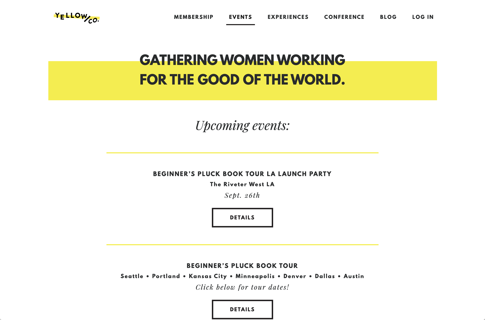
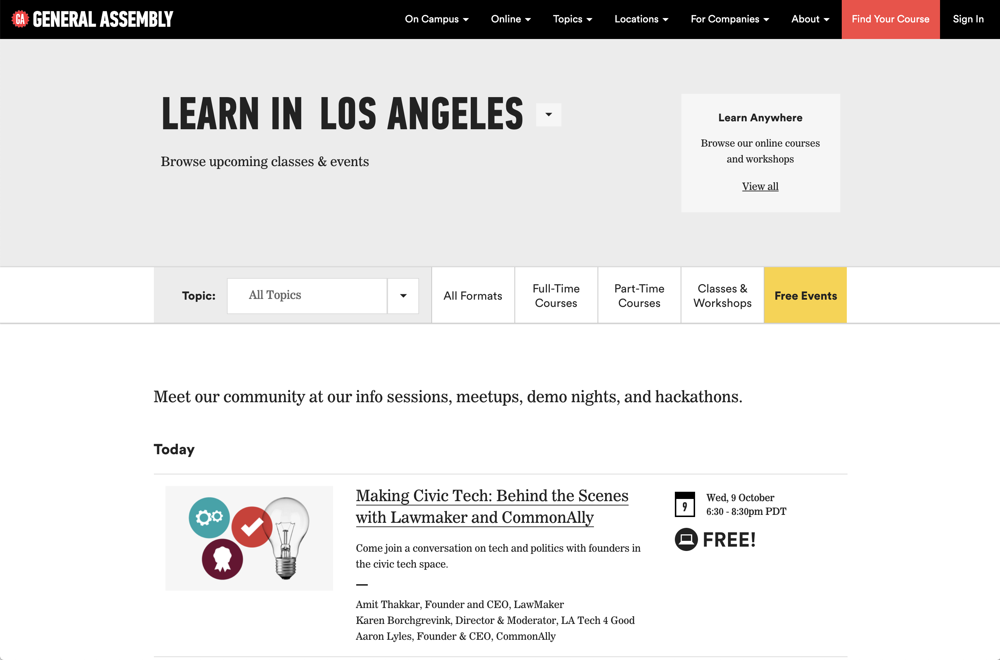

screenshot examples
a) event page with no filtering/navigation
event with little info listed. links to external microsite for the event.
b) event & workshop pages w/ dropdown & toggle button filters
this page joins both workshops & events on one page. event cards list general event info. clicking the event card navigates to new page (not an external microsite) with additional details.
c) toggle list vs map + dropdown (simple)

similar to option b, dropdown filter views upcoming + past events. event card lists only event name, date, location. clicking the event card navigates to a new page with additional details.